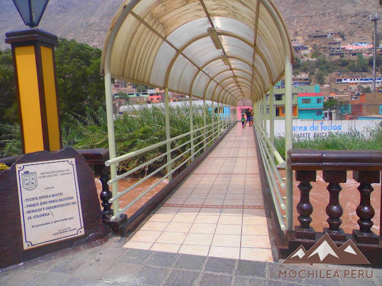

Centros turísticos
Cristo blanco
Iglesia De Santo Toribio
Pileta

Puente peatonal Estela Montti
Paseo de las Lechuzas
Mural en jirón Colombia
¡Visita Ya!
Restaurantes
Chosica también cuenta con varios lugares que ofrecen comida rápida, cevicherías y pequeños restaurantes familiares que sirven platos sencillos pero deliciosos. La variedad gastronómica de la zona hace que sea un lugar interesante para disfrutar de la cocina peruana en un ambiente tranquilo y diferente al bullicio de la ciudad.
Clubes
Chosica cuenta con varios clubes sociales y recreativos que ofrecen una excelente opción para quienes buscan disfrutar de actividades al aire libre, deportes y un ambiente de esparcimiento en familia o con amigos. Estos clubes son populares tanto entre los residentes locales como entre quienes visitan la zona por su agradable clima y la tranquilidad que ofrece el distrito.
alojamientos de Chosica
Chosica es un destino popular para quienes buscan escapar del ajetreo de Lima y disfrutar de un ambiente más tranquilo y natural, con su clima cálido y soleado. Tiene varias opciones para quienes desean pasar uno o varios días en la zona. Los alojamientos en Chosica varían desde pequeños hoteles y hostales hasta casas de campo y complejos turísticos.
Casonas
Las casonas de Chosica son una parte importante del patrimonio arquitectónico del distrito, pues muchas de ellas reflejan el auge de la zona durante el siglo XX, cuando Chosica se convirtió en un popular destino de descanso para familias limeñas. Estas construcciones, generalmente de dos o tres pisos, con detalles ornamentales que incluyen balcones de madera, amplias ventanas y grandes jardines.